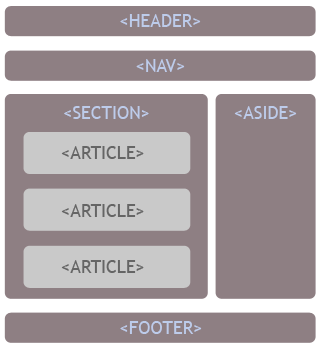
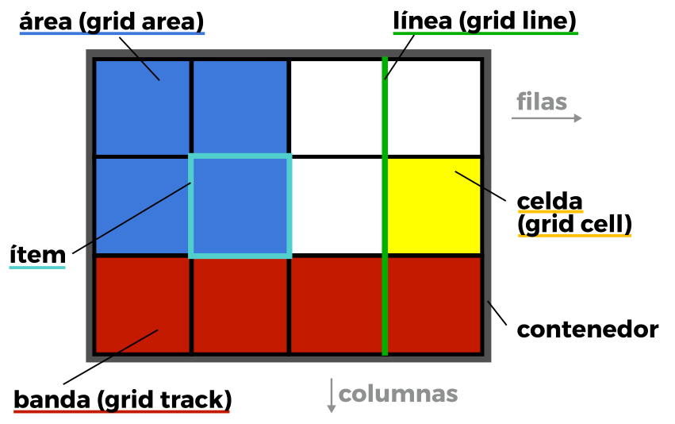
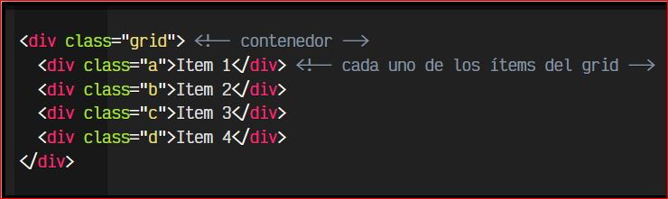

Este sitio tiene como proposito fundamental garantizar la disponibilidad de los contenidos de aprendizaje de forma eficiente para su utilizacion en la web mediante recursos digitales y actividades de aprendizaje que refuercen conceptos fundamentales de las temáticas: Etiquetas Semánticas y CSS Grid
Etiquetas Semánticas
Según Angel Alvarez (2012), las etiquetas semanticas, son aquellas que dan un significado a las partes del documento. Por decirlo de otra forma, estamos ante etiquetas que indican qué es el contenido que contienen, en lugar de cómo se debe formatear al mostrar el documento HTML en un cliente web.
En HTML5 se han incorporado muchas etiquetas que sirven para indicar qué son y cuál es el significado de los elementos que contienen dentro. Esas son las etiquetas semánticas, que ganan mucha importancia en el marco del HTML y de la composición de un documento web por ayudar a motores de búsqueda como Google a indexar más correctamente los contenidos de un sitio.
Etiquetas Semánticas Estructurales
Sirven para definir la estructura de un documento HTML, para que los motores de búsqueda, o cualquier otro mecanismo automático que lea un sitio web, sepa con exactitud qué partes de su contenido corresponden a cada una de las partes típicas de un sitio. Generalmente, en cualquier documento tenemos una cabecera, un cuerpo y un pie de página, elementos que definen la estructura representados por diversas etiquetas.
De este modo, HTML5 tiene una etiqueta HEADER, que debe englobar aquellos elementos correspondientes a la cabecera de la página. Tiene un FOOTER, que debe englobar todas las etiquetas que componen el pie. Luego, para el cuerpo realmente no existe una etiqueta en concreto, sino que se representará por diversas otras como SECTION, ARTICLE o ASIDE. Existirán además otras etiquetas que representan elementos típicos como la barra de navegación, etiqueta NAV.

CSS Grid
segun J. Román (2017) Uno de los procesos más problematicos y frustrantes de CSS, sobre todo para novatos o principiantes, es el proceso de colocar y distribuir los elementos a lo largo de una página. Mecanismos como posicionamiento, floats o elementos en bloque o en línea, suelen ser insuficientes (o muy complejos) para crear un layout o estructuras para páginas web actuales. El sistema flexbox es una gran mejora, sin embargo, está orientado a estructuras de una sola dimensión, por lo que aún necesitamos algo más potente para estructuras web más específicas o complejas. Con el paso del tiempo, muchos frameworks y librerías utilizan un sistema grid donde definen una cuadrícula determinada, y modificando los nombres de las clases de los elementos HTML, podemos darle tamaño, posición o colocación. Grid CSS nace de esa necesidad, y recoge las ventajas de ese sistema, añadiendole numerosas mejoras y características que permiten crear rápidamente cuadrículas sencillas y potentes de forma prácticamente instantánea. Para utilizar Grid CSS necesitaremos tener en cuenta una serie de conceptos que utilizaremos a partir de ahora y que definiremos a continuación:

- Contenedor:El elemento padre contenedor que definirá la cuadrícula o rejilla.
- Ítem:Cada uno de los hijos que contiene la cuadrícula (elemento contenedor).
- Celda (grid cell):Cada uno de los cuadritos (unidad mínima) de la cuadrícula.
- Area (grid area):Región o conjunto de celdas de la cuadrícula.
- Banda (grid track):Banda horizontal o vertical de celdas de la cuadrícula.
- Línea (grid line):Separador horizontal o vertical de las celdas de la cuadrícula
Para utilizar cuadriculas Grid CSS, trabajaremos bajo el siguiente escenario:
